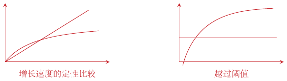

第 14 讲：自适应实验
自适应实验动态调整实验设计。此前的固定实验在 IID 框架下进行，而这一假设有时过于严格。
设定与记号
有动作 \(k=1,\ldots,K\) 和受试者 \(t=1,\ldots,T\)。不同受试者的潜在结果独立同分布。记 \[Y_t(k)\sim F_k,\qquad Y_t=Y_t(W_t),\qquad \mu_k=\mathbb E[Y_t(k)].\] \(W_t\) 是为第 \(t\) 个受试者选择的动作，\(F_k\) 是臂 \(k\) 的潜在结果分布，\(\mu_k\) 是其均值。定义 regret： \[R_T=\sum_{t=1}^T(\mu^*-\mu_{W_t}),\qquad \mu^*=\sup_{1\le k\le K}\mu_k.\] \(\mu^*\) 是所有可用动作中最大的期望奖励。Regret 衡量：相较于始终选择最优动作，选择当前动作序列损失了多少期望奖励。
定义 \[n_{kt}=\sum_{j=1}^t\mathbf1\{W_j=k\},\qquad \widehat\mu_{kt}=\frac1{n_{kt}}\sum_{j=1}^t\mathbf1\{W_j=k\}Y_j.\]
\(n_{kt}\) \(\textcolor{black}{\longrightarrow}\) 截至时点 \(t\)，选择臂 \(k\) 的次数。
\(\widehat\mu_{kt}\) \(\textcolor{black}{\longrightarrow}\) 臂 \(k\) 的平均奖励。
使用的是从第 \(1\) 期到第 \(t\) 期收集的信息。
我的重新表述。
可以想象有 \(T\) 个相似、独立的个体。每个人都有 \(K\) 种处理选择，因而有 \(K\) 个潜在结果，各臂对应的分布 \(F_k\) 对所有人相同。对每个人，只能观测被选择处理的结果 \(Y_t=Y_t(W_t)\)。向量 \(\mu\) 收集了各臂的期望奖励。总 regret 就是对 \(T\) 个人累加：所选处理与最优处理之间的差距；在这个设定中，最优臂始终是同一个。
在普通随机实验中，\(W_t\) 在 \(1,\ldots,K\) 上均匀且非自适应地选择，因此 regret 随 \(T\) 线性增长： \[R_T\sim T\sum_{k=1}^K\frac{\mu^*-\mu_k}{K}.\] 求和项的平均是每个个体的期望损失。自适应实验的首要目标是使 regret 次线性增长。
Regret 不应随实验次数或时间线性增长；选择要逐渐接近最优。 \(\textcolor{red}{\longrightarrow}\) 次线性 regret。
这需要平衡探索（尝试）与利用（使用已有知识）。
面对不确定性时保持乐观
置信上界（UCB）方法平衡探索与利用：
对每个臂抽样 \(t_0\) 次进行初始化：选择并观测 \(t_0\) 次，一共 \(Kt_0\) 次初始抽样。
对每个 \(t=Kt_0+1,Kt_0+2,\ldots\)，基于截至 \(t-1\) 收集的数据，为每个 \(\mu_k\) 构造置信区间 \(\widehat U_{kt}\)。
选择置信区间上端点最大的动作 \(W_t\)，观测 \(Y_t=Y_t(W_t)\)。
每过一个 \(t\)，只多了一个数据点。
为理解 UCB 控制 regret 的原理，将奖励简化为高斯分布： \[Y_t(k)\sim\mathcal N(\mu_k,b^2),\tag{14.4}\] 其中 \(b^2\) 已知。
这里已知是为了简化计算。 \(\textcolor{blue}{\longrightarrow}\) 高斯 UCB 半径中的 \(b^2\)。
使用 \[\widehat U_{kt}=\widehat\mu_{k,t-1} \ \pm\ b\sqrt{\frac{4\log T}{n_{k,t-1}}}.\tag{14.5}\] 当 \(t_0=1\) 且 \(T\ge\max\{K,2\}\) 时，regret 的上界为 \[R_T\le\sum_{k:\mu_k<\mu_{k^*}} \left\{\frac{16b^2\log T}{\mu_{k^*}-\mu_k} +(\mu_{k^*}-\mu_k)\right\},\tag{14.6}\] 以至少 \(1-K/T\) 的概率成立，其中 \(k^*\) 表示最优臂。
我对这个界的直觉。
分母中的差距 \(\mu_{k^*}-\mu_k\)。 \(\textcolor{red}{\longrightarrow}\) 臂与最优臂越接近，UCB 越需要更长的时间分辨；很差的臂可快速丢弃。
UCB 的 regret 只以对数增长。\(\mu_{k^*}-\mu_k\) 很小时，看起来会使上面的界趋向无穷。实际上有两个相互竞争的界：effect 强时，UCB 在置信区间分离后丢弃该臂；effect 弱时，总 regret 至多为 \(T(\mu_{k^*}-\mu_k)\)。结合两者就得到有限上界；当均值差一致有界时，可得到 \(K\sqrt{T\log T}\) 阶的上界。
在置信事件上，每只臂的贡献至多为 \(\min\{T\Delta_k,16b^2\log T/\Delta_k+\Delta_k\}\)。一致的 \(O(K\sqrt{T\log T})\) 比较需要固定 \(b\) 且差距一致有界；仅初始化就有 \(\sum_k\Delta_k\) 的代价。
UCB 的 regret 上界
将 regret 写成 \[R_T=\sum_{k:\Delta_k>0}n_{kT}\Delta_k,\qquad \Delta_k=\mu^*-\mu_k.\] 主要任务是控制 UCB 选择次优臂的次数。
我也用这一点理解 UCB 的设计。 \(\textcolor{red}{\longrightarrow}\) 控制选择次数 \(n_{kT}\)。
设 \(\zeta_{kj}\) 是臂 \(k\) 第 \(j\) 次被选择的时间。对每个臂，设想有一列 IID 奖励 \(Y'_\ell(k)\sim\mathcal N(\mu_k,b^2)\)，每次选择该臂时揭示下一个观测。于是 \[\begin{aligned} &P\left[\sup_{K<t\le T}\left\{ \mu_k-\widehat\mu_{k,t-1}-b\sqrt{\frac{4\log T}{n_{k,t-1}}}\right\}\ge0\right]\\ &\quad\le P\left[\sup_{1\le j\le n_{kT}}\left\{ \mu_k-\widehat\mu_{k,\zeta_{kj}}-b\sqrt{\frac{4\log T}{j}}\right\}\ge0\right]\\ &\quad=P\left[\sup_{1\le j\le n_{kT}}\left\{ \mu_k-\frac1j\sum_{\ell=1}^jY'_\ell(k)-b\sqrt{\frac{4\log T}{j}}\right\}\ge0\right]\\ &\quad\le P\left[\sup_{1\le j\le T}\left\{ \mu_k-\frac1j\sum_{\ell=1}^jY'_\ell(k)-b\sqrt{\frac{4\log T}{j}}\right\}\ge0\right] \le\frac1T. \end{aligned}\]
扩大索引集合，上确界及相应事件只会变大。 \(\textcolor{red}{\longrightarrow}\) \(K<t\le T\ \leadsto\ 1\le j\le n_{kT}\ \leadsto\ 1\le j\le T\)
这里把日历时间改为同一只臂的观测次数。最后的集中不等式是我想进一步检查的一步。
我对 Hoeffding 不等式的疑问。
对相互独立的随机变量 \(Z_1,\ldots,Z_n\)，若几乎必然有 \(Z_i\in[a,b]\)，且 \(s>0\)，则 \[P\left(\frac1n\sum_{i=1}^n(Z_i-\mathbb E[Z_i])\ge s\right) \le\exp\left(-\frac{2ns^2}{(b-a)^2}\right).\] 下尾有相同的界，双侧界多一个因子 \(2\)。
几乎肯定有界。 \(\textcolor{red}{\longrightarrow}\) \(Z_i\in[a,b]\)
对事件 \(A_1,\ldots,A_n\)， \[P(A_1\cup\cdots\cup A_n)\le\sum_{i=1}^nP(A_i).\] 我把这个 union bound 与所需的置信水平 \(1-K/T\) 联系起来。
我的计算尝试：猜吧，也许只需证明 \[P\left(\mu_k-\frac1j\sum_{\ell=1}^jY'_\ell(k) -b\sqrt{\frac{4\log T}{j}}\ge0\right)\le\frac1T.\] 左边可以写成 \[P\left(\frac1j\sum_{\ell=1}^jY'_\ell(k)-\mu_k \le-b\sqrt{\frac{4\log T}{j}}\right).\] 尝试套用有界变量的不等式，会得到下面这个表达式： \[\exp\left(-\frac{2j\,b^2(4\log T)/j}{(b-a)^2}\right) =\exp\left(-\frac{8b^2}{(b-a)^2}\log T\right) \ \overset{?}{\le}\ \frac1T.\] 但 \(Y'_\ell(k)\) 无界，\(k\) 是否写错了？不知道最后一步怎么化，可能有未说明的假设。
选择次数的论证需要以下同时成立的事件，其概率至少为 \(1-K/T\)： \[|\widehat\mu_{k,t-1}-\mu_k| \le b\sqrt{\frac{4\log T}{n_{k,t-1}}} \quad\text{对所有 }k,\ t=K+1,\ldots,T.\tag{14.8}\]
补充推导：高斯分布的集中不等式
高斯假设提供了所需的尾概率界，不必要求奖励有界。记 \(\overline Y'_{kj}=j^{-1}\sum_{\ell=1}^jY'_\ell(k)\)。当 \(T\ge2\) 时， \[\sqrt j(\overline Y'_{kj}-\mu_k)/b\sim N(0,1),\qquad P\left(|\overline Y'_{kj}-\mu_k|>b\sqrt{4\log T/j}\right) =2\Phi(-2\sqrt{\log T})\le T^{-2}.\] 最后一步使用正态尾界 \(2\Phi(-x)\le2e^{-x^2/2}/(x\sqrt{2\pi})\)。 对至多 \(KT\) 个臂／次数组合使用 union bound，即得到 (14.8)。 如果每个计数只有 \(1/T\) 的界，再对所有计数取并集就不够。高斯标准差 \(b\) 与有界变量不等式中区间端点的 \(b\) 也不是同一个量。讲义在这段推导中两次出现的 \(Y'_\ell(0)\) 应为 \(Y'_\ell(k)\)。
继续推导选择次数界。
在事件 (14.8) 上，记 \(r_{kt}=b\sqrt{4\log T/n_{k,t-1}}\)。若 \(W_t=k\)，由 UCB 的选择规则， \[\begin{aligned} \mu^*&\le\widehat\mu_{k^*,t-1}+r_{k^*t}\\ &\le\widehat\mu_{k,t-1}+r_{kt}\\ &\le\mu_k+2r_{kt}. \end{aligned}\] 第一步和最后一步分别用到 (14.8) 的两个偏差方向。因此，当 \(\Delta_k>0\) 时， \[n_{k,t-1}\le\frac{16b^2\log T}{\Delta_k^2},\qquad n_{kT}\le\frac{16b^2\log T}{\Delta_k^2}+1.\]
置信事件（1），再加上 UCB 选择 \(k\)。 \(\textcolor{red}{\longrightarrow}\) 次数阈值（2）：\(n_{k,t-1}\le16b^2\log T/\Delta_k^2\)。
我的理解：选择臂 \(k\)，说明它的置信区间上端点还必须高于最优臂的上端点。一旦选择次数超过阈值，而阈值只随 \(\log T\) 增长，在这个论证中就不能再选择它了。
这两幅草图分别比较增长速度、示意越过阈值。

将次数上界代入 regret： \[R_T=\sum_{k:\Delta_k>0}\Delta_k n_{kT} \ \le\ \sum_{k:\Delta_k>0}\left\{\frac{16b^2\log T}{\Delta_k}+\Delta_k\right\}.\]
最后加上的均值差 \(\Delta_k\)。 \(\textcolor{red}{\longrightarrow}\) 该臂初始化时 \(t_0=1\) 次选择带来的 regret；第一项对应其余选择。
自适应随机化方案
UCB 有局限性：很难与 IID 抽样方法结合，也难以推广到复杂的抽样设计。各臂的 \(b_k^2\) 可以不同，需要构造基于不同标准误的、可比较的置信区间。
UCB 的 \(W_t\) 依赖过去的观测。 \(\textcolor{red}{\longrightarrow}\) 许多熟悉的方法，包括统计检验和条件均值模型拟合，依赖随机化的 IID 数据。
Thompson 采样。
这是 UCB 的替代方案：基于 Bayesian 更新的启发式算法。
为每个潜在结果分布 \(F_k\) 选择先验 \(\Pi_{k,0}\)。
在时点 \(t\)，计算臂 \(k\) 是最优臂的后验概率： \[e_{k,t-1}=P_{\Pi_{t-1}}(\mu_k=\mu^*).\]
随机选择动作： \[W_t\sim\operatorname{Categorical}(e_{\cdot,t-1}).\]
观测 \(Y_t=Y_t(W_t)\)，并将后验更新为 \(\Pi_t\)。
Thompson 采样与 UCB 有相似的统计行为：周期性地对每个臂采样，直到基本确信该臂较差。
后验概率降到 \(1/T\) 以下。 \(\textcolor{red}{\longrightarrow}\) 基本确信该臂较差。
若后验允许并列最优臂，需指定平局规则，使各概率之和为一。\(1/T\) 的比较是直觉，并不是 Thompson sampling 的停止规则。
Thompson 采样中的动作是随机的，自适应随机化概率依赖过去的数据。这自然可以与因果推断结合。
Thompson 采样使用依赖历史数据的概率随机选择动作。 \(\textcolor{black}{\longrightarrow}\) 与因果推断结合。
调整先验 \(\Pi_0\) 可能比调整 UCB 区间 \(\widehat U_{kt}\) 更合理。
自适应实验中的统计推断
分析由 UCB 或 Thompson 采样得到的数据，并对问题背后的参数给出置信结论。这比 IID 情形困难得多。
\(\mu_k\) 的两个自然估计量，一是样本均值： \[\widehat\mu_k^{\mathrm{AVG}}=\widehat\mu_{kT} =\frac1{n_{kT}}\sum_{t=1}^T\mathbf1\{W_t=k\}Y_t,\tag{14.11}\] 二是 Thompson 采样下的 IPW 估计量：
这里 \(e_{tk}=P(W_t=k\mid\mathcal H_{t-1})>0\) 在当前结果出现前计算，对应前面的 \(e_{k,t-1}\)。IPW／AW 公式需要随机探索；确定性 UCB 未必给每只臂正的选择概率。
\[\widehat\mu_k^{\mathrm{IPW}}=\frac1T\sum_{t=1}^T \frac{\mathbf1\{W_t=k\}Y_t}{e_{tk}}.\tag{14.12}\] 由于数据收集是自适应的，这些估计量未必具有渐近正态极限分布，所以置信区间难以构造。
自适应加权估计量可以得到高斯枢轴量： 高斯枢轴量接近，或依分布收敛到 \(N(0,1)\)。 \[\widehat\mu_k^{\mathrm{AW}} =\frac{\displaystyle\sum_{t=1}^T \frac{\mathbf1\{W_t=k\}Y_t}{\sqrt{e_{tk}}}} {\displaystyle\sum_{t=1}^T \frac{\mathbf1\{W_t=k\}}{\sqrt{e_{tk}}}}.\tag{14.13}\] 例如，设当前潜在结果 IID 且独立于过去，\(0<b_k^2<\infty\)，\(E|Y_t(k)-\mu_k|^4<\infty\)，可预测概率满足 \(e_{tk}\ge ct^{-\alpha}\)，其中 \(c>0\)、\(0\le\alpha<1\)。则 \[\widehat V_k^{-1/2}(\widehat\mu_k^{\mathrm{AW}}-\mu_k) \ \Rightarrow\ \mathcal N(0,1),\] 其中 \[\widehat V_k= \frac{\displaystyle\sum_{t=1}^T \left\{\frac{\mathbf1\{W_t=k\}(Y_t-\widehat\mu_k^{\mathrm{AW}})} {\sqrt{e_{tk}}}\right\}^{\!2}} {\displaystyle\left\{\sum_{t=1}^T \frac{\mathbf1\{W_t=k\}}{\sqrt{e_{tk}}}\right\}^{\!2}}.\tag{14.14}\] 我的解释：由于估计量稳定了方差，便可以恢复 CLT。它的方差变得可控制，从而能应用中心极限定理。
推导：估计量背后的鞅。
鞅 \(M_t\) 适应于可用历史 \(\mathcal H_t\)，满足 \(E|M_t|<\infty\)，且 \(E[M_t\mid\mathcal H_{t-1}]=M_{t-1}\)。特别地，\(M_t\) 只使用截至时点 \(t\) 的信息。
由 (14.13)， \[\widehat\mu_k^{\mathrm{AW}}-\mu_k =\frac{\displaystyle\sum_{t=1}^T \frac{\mathbf1\{W_t=k\}(Y_t-\mu_k)}{\sqrt{e_{tk}}}} {\displaystyle\sum_{t=1}^T \frac{\mathbf1\{W_t=k\}}{\sqrt{e_{tk}}}}.\] 令分子中的部分和为 \[M_t=\sum_{j=1}^t \frac{\mathbf1\{W_j=k\}(Y_j-\mu_k)}{\sqrt{e_{jk}}}.\] \(W_t\) 根据时点 \(t\) 之前可用的信息随机选择，并且给定过去后与 \(Y_t(k)\) 独立。因此，\(M_t\) 是鞅：
\[\mathbb E[M_{t+1}\mid M_1,\ldots,M_t]=M_t,\qquad \text{对所有 }t.\]
由加权方案， \[\operatorname{Var}[M_t\mid M_1,\ldots,M_{t-1}]=b_k^2, \qquad b_k^2=\operatorname{Var}[Y_t(k)].\tag{14.18}\] 给定之前的部分和后，这也就是新增加一项的条件方差。
只要 \(e_{tk}\) 不衰减得太快，由鞅 CLT 可得 \[\frac{M_T}{\sqrt{Tb_k^2}}\Rightarrow\mathcal N(0,1).\] 自适应加权的 CLT；有限二阶矩；抽样概率 \(e_{tk}\) 的衰减速度应慢于 \(1/t\)。这排除了最激进的强有效探索方案：一个臂只抽样 \(\log T\) 量级的次数。
补充条件：鞅枢轴量
一组清楚的充分条件是：\(0<b_k^2<\infty\)，\(E|Y_t(k)-\mu_k|^4<\infty\)，可预测的 \(e_{tk}\ge c t^{-\alpha}\)，其中 \(c>0\)、\(0\le\alpha<1\)，且当前潜在结果独立于过去的数据。对 \(D_t=\mathbf1\{W_t=k\}(Y_t-\mu_k)/\sqrt{e_{tk}}\)， \[E[D_t\mid\mathcal H_{t-1}]=0,\quad E[D_t^2\mid\mathcal H_{t-1}]=b_k^2,\quad T^{-2}\sum_{t\le T}E[D_t^4]=O(T^{\alpha-1})\to0.\] 由此得到鞅 Lyapunov 条件，以及 \(T^{-1}\sum D_t^2\) 的集中性。AW 分母的可预测均值量级至少为 \(T^{1-\alpha/2}\)，波动为 \(O_P(\sqrt T)\)，因此可得一致性，并允许在方差中使用拟合残差。这些条件充分但非必要。更一般的条件见 Hadad 等（2021）。
接着， \[\frac1{Tb_k^2}\sum_{t=1}^T \left\{\frac{\mathbf1\{W_t=k\}(Y_t-\widehat\mu_k^{\mathrm{AW}})} {\sqrt{e_{tk}}}\right\}^{\!2} \xrightarrow{P}1.\] 这一步证明集中性；再次要求概率不要衰减得太快。\(\widehat\mu_k^{\mathrm{AW}}-\mu_k\) 与 \(\widehat V_k^{1/2}\) 的分母相消，就得到前面的高斯枢轴量。
\(\widehat\mu_k^{\mathrm{AW}}-\mu_k\) 与 \(\widehat V_k^{1/2}\) 的分母相消。 \(\textcolor{black}{\longrightarrow}\) 式 (14.14) 中的高斯枢轴量。